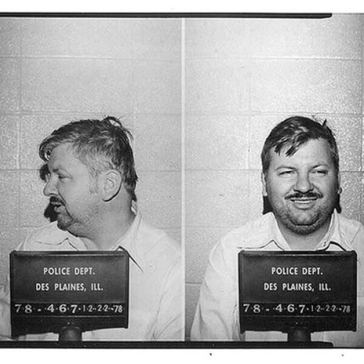

Case Details:
John Wayne Gacy between 1972 and 1978, raped, tortured, and murdered at least thirty three young men and teenage boys in Norwood Park Township, a suburb of Chicago, Illinois. He would lure victims often young employees or hitchhikers to his home in the township. He often used a fake magic trick to handcuff them before torturing and killing them by strangulation or asphyxiation. When he went to bury his victims he would bury twenty six of the victims in the crawl space under his house, tossed four into the Des Plaines River, and three elsewhere on his property.
Verdict:
His trial began in February 1980 in Cook County, Illinois. His defense team pleaded not guilty by reason of insanity, presenting psychologists who diagnosed him as schizophrenic. The jury rejected the insanity defense and Gacy was convicted of thirty three murders and sentenced to death in March 1980 where he was later put to death in 1994 after many failed attempts to appeal.